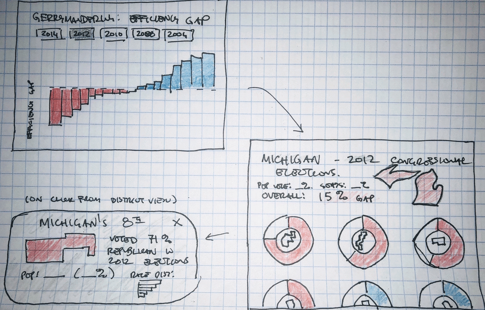

mind the gap.
This visualization explores the political strategy of gerrymandering, how we can measure it, and what role it played in the 2012 US federal congressional elections.
Gerrymandering is an ingrained facet of one of the most fundamental aspects of American democracy - how we draw the districts that elect our representatives. It's a political strategy that's often blamed for creating uncompetitive elections or stoking political divisiveness and has received quite a bit of attention from national publications.
This visualization dives into how gerrymandering works, what methods we can use quantifiably measure this phenomenon, and what these metrics can tell us about its effect in American elections. This analysis specifically focuses on the 2012 Federal Congressional elections, measuring the efficiency gap and difference from proportional representation to find evidence of gerrymandering's political influence stemming from significant redistricting that followed the 2010 census.
Process
Data Source: FEC 2012 Senate and House Results
Tools: Adobe Illustrator / CSS / Flexbox / HTML / JavaScript / jQuery / Node / p5
Data
The data I used in this project comes from a 2012 federal congressional election results excel file available on the FEC website. I first needed to do some clean-up in excel to standardize undeeded inconsistencies and reduce this data to only those candidates who won their district's primaries in the year's house elections.
I then used node.js to further process this data, leveraging the power of js libraries including p5, jQuery, and Lodash. I needed to organize district results, tracking the votes and percentage of votes cast for each candidate compared with the amount of votes needed to win that district, and calculate state-wide results of my two main metrics for each party: the efficiency gap and the difference between seats earned and seats expected in a system with pure proportionality. This data processing generated two clean json files, one for district results and one for state, that I fed into my front-end visualization.
Visualization
A straightforward state-level bar chart, created using jQuery and Flexbox, clearly communicates our primary metric, the efficiency gap, using a familiar visual language that allows us to quickly draw insight from the data. Using red and blue to distinguish our political parties requires little to no cognitive lift, while ranked ordering of states allows us to quickly see which states enjoyed disporoportionate advantages by each party. The reference lines show us cut-offs suggested by researchers, allowing us to quickly see which states cross thresholds of reasonability.
Our prominent menu at the top of this visualization lets us know which metric we're viewing and allows us to switch between metrics. We use flexbox and CSS transitions to maintain object constancy when our metric is switched, making it easier for us to get a general sense of how the two metrics are correlated or to follow one specific state's change in ranking from one metric to another.

Hovering over a state displays secondary-level detail - straight-forward, familiar statistics that underpin our key metric calculations. These metrics, and the benefitting party, are also highlighted in that party's color, providing visual consistency and context for those who may be unfamiliar with this coloring system. This functionality also lets us know how we can advance to our next visualization - a click brings us to the view that examines each district within a state.
Our district-level visualization breaks up votes into blocks of 5,000 votes, stacks these blocks into one bar for each district, and arranges these blocks based on total party votes in that district. These design choices allow us to quickly get a general sense of which party won more districts (by comparing the left-most color in each bar), by what margin (what proportion of blocks were cast for this party), and even get a general sense of voter turnout across districts (since each district is drawn to include approximately population size).
We can also use this view to help visually explain the methodology for calculating the efficiency gap. The emphasized 'darker' blocks are all 'wasted' votes per the efficiency gap definition - arranging the visualization this way matches the visual language of our introductory explanations and allows us to get a sense of the proportion of votes cast that were 'wasted' for each party.
Our introduction and background sections help explain how gerrymandering works in a visual context, establishing a visual language of party colors, blocks of votes, and stacking these votes into district-level bar charts.
These introductory visuals also help explain how our main metrics are calculated - for the efficiency gap, what constitutes a wasted vote and how we visually distinguish these votes by lightening their opacity. When this visual language is maintained in our district-level visualization, we're able to more easily connect this theory and background with the results of the 2012 elections to understand the data behind our calculations.
--Parsons--
A History Of Collecting At The Met

Like this project? Want to get in touch? Reach out!